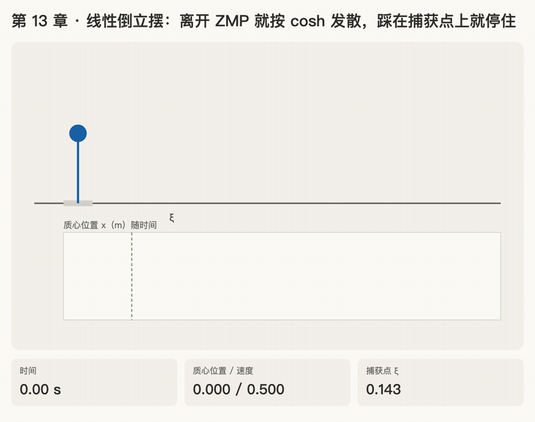

第 13 章 · 线性倒立摆与 ZMP：双足机器人为什么要不停地迈步
本地运行
git clone https://github.com/wikieden/robot-motion-rl
cd robot-motion-rl/code/notebooks
pip install jupyterlab torch numpy
jupyter lab ch13_lipm_zmp.ipynb也可以下载后直接用 VS Code 打开 .ipynb 运行。需要 GPU 的章节在 Colab 里选「代码执行程序 → 更改运行时类型 → GPU」。
本章回答：人形机器人走路，经典方法把几十个关节压缩成什么？ZMP 是什么，为什么它必须在脚底下？质心偏离以后为什么会越来越快地倒？往哪里迈一步才能停下来？
讲解日期：2026-11-20 · 上一章：第 12 章 LQR · 下一章：第 14 章 单刚体凸 MPC 与 WBC
对应原文：Underactuated Robotics「Humanoid Robots」（robot-motion-rl/materials/text/underactuated-humanoids.txtL30–L37 CoP 与 ZMP 方程，L44–L46 ZMP 定义，L57–L62 「先定落脚点 → 再定 ZMP → 再定质心 → 最后算关节」的分层）；运控细化笔记 §5.3（robot-system-architecture/notes/02-motion-control-deep-dive.md）
本章缩写：CoM = Center of Mass（质 / 心）；CoP = Center of Pressure（压力 / 中心）；ZMP = Zero Moment Point（零 / 力矩 / 点）；LIPM = Linear Inverted Pendulum Model（线性 / 倒立摆 / 模型）；z_c：质心高度（c = constant，保持不变）；ω：LIPM 的固有频率（读 "omega"，单位 1/s）；ξ：捕获点（读 "xi"，capture point）；cosh、sinh：双曲余弦、双曲正弦（cosh t = (eᵗ + e⁻ᵗ)/2）。全部缩写见 附录 · 缩写与术语表
讲解
第一步：ZMP：地面「托住」你的那个点（2026-11-20）
类比：站在公交车上。 车一加速你往后倒，你会把重心压到前脚掌；地面推你的合力作用点从脚跟移到了脚尖。这个点就是压力中心 CoP。
脚底各处受到的支撑力，可以合成一个作用在地面某一点上的力，这个点上合力矩为 0，叫 ZMP（原文 L44–L46）。在平地上 ZMP 就是 CoP。关键约束：ZMP 只能落在支撑多边形（着地脚覆盖的区域）里面，因为地面只能推、不能拉。
一句话：ZMP 是地面托你的那个点，它只能在脚底下。
第二步：线性倒立摆：把整个人压缩成一个点（2026-11-20）
类比：用手指顶一根竖着的扫帚。
假设质心高度保持 \(z_c\) 不变、身体不转，原文的力矩平衡（L37）简化成著名的 ZMP 方程：
- x：质心的水平位置；p：ZMP 的位置；ω：固有频率。
- 读法：质心在 ZMP 哪一边，就往哪一边加速，离得越远加速越猛。
例子：质心高 0.8 m，\(\omega = \sqrt{9.8/0.8} =\) 3.5 /s。想让质心（此刻在 0）以 1 m/s² 往前加速，ZMP 要放在 \(p = x - \ddot x/\omega^2 = 0 - 1/12.25 =\) −0.082 m（质心后面 8 cm）。想往前走，就得让 ZMP 落在身后，像扫帚往前倒。
一句话：质心离 ZMP 多远，就往外加速多猛；ZMP 是控制质心的旋钮。
第三步：偏离会指数发散（2026-11-20）
类比：扫帚一旦歪了，倒得越来越快。
ZMP 固定在 p 时，方程的解是
例子：质心比 ZMP 偏前 5 cm、静止起步（ω = 3.5）：
| t | 0.1 s | 0.3 s | 0.5 s |
|---|---|---|---|
| 质心位置 | 0.053 m | 0.080 m | 0.148 m |
| 速度 | 0.06 m/s | 0.22 m/s | 0.49 m/s |
半秒之内偏差变成 3 倍。cosh 是指数增长：这就是「不稳定」。ZMP 又只能在脚底下动，脚底就那么大，所以光靠脚底使劲救不回来，必须迈步，把支撑多边形挪过去。
一句话：质心偏离 ZMP 按 cosh 发散，脚底挪不够，就得迈步。
第四步：捕获点：往哪迈一步能停下（2026-11-20）
类比：骑车刹车前，你本能地知道「得在前面哪里放脚」。
在解里令 t → ∞ 时 x 不发散，需要 \(p = x_0 + v_0/\omega\)。这个点叫捕获点：
例子：质心在 0、往前 0.5 m/s，\(\xi = 0 + 0.5/3.5 =\) 0.143 m。把脚（ZMP）踩在 0.143 m 处，2 秒后质心停在 0.143、速度约 0：正好停在脚正上方。
经典人形行走就是这样分层的（原文 L57–L62）：先规划落脚点 → 再规划 ZMP 轨迹（在每只脚底下）→ 用 LIPM 反推质心轨迹（Kajita 2003 的预观控制，未下载）→ 最后用逆运动学和全身控制算关节。RL 策略（第 1–11 章）把这几层压成一个网络，自己学会什么时候迈、迈多远。
一句话：捕获点 = 位置 + 速度 / ω，脚踩在那里就能停住。
动画演示：线性倒立摆的发散与捕获点

可交互版：animations/13-lipm-zmp.html（滑块：质心高度、初始速度；按钮：迈到捕获点）。
怎么看：
- 侧视图：圆点是质心，竖线连到脚（ZMP），灰色是脚底的支撑区（第一、二步）。
- 第一段：脚不动，质心越倒越快，下方曲线是 cosh 形状（第三步）。
- 第二段：在中途按捕获点 ξ 迈一步，质心减速、停在新脚正上方（第四步）。拖质心高度看 ω 怎么变。
练习与作答记录
题 1（第二步）：质心高 1.0 m，ω 是多少？想让质心以 2 m/s² 往前加速，ZMP 要在质心后面多远？
作答：（待作答）
题 2（第三步）：如果把方程改成 \(\ddot x = -\omega^2(x-p)\)（符号反过来），质心会怎么动？生活里什么东西是这样动的？
作答：（待作答）
题 3（第四步）：质心在 0、速度 0.8 m/s、质心高 0.8 m，捕获点在哪？如果最大步长只有 0.2 m，一步能停住吗？
作答：（待作答）
口诀
公交车上压前脚，地面托你那一点叫 ZMP，只能在脚底；
人压成一个点，质心在 ZMP 哪边就往哪边加速；
歪了按 cosh 倒，脚底挪不够就得迈步；
位置加速度除以 ω，踩在捕获点就停住。
本章复习卡片
M25（ZMP 方程 ẍ = ω²(x − p)，ω = √(g/z_c)，为什么 ZMP 必须在支撑多边形里）、M26（LIPM 的指数发散与捕获点 ξ = x + ẋ/ω）
附录 · 延伸阅读
留给以后深入学习用，不影响本章主线。★ 是建议先读的。
推荐阅读
| 读什么 | 读哪里 | 读它为了什么 |
|---|---|---|
| ★ Underactuated · Humanoids | robot-motion-rl/materials/text/underactuated-humanoids.txt L30–L47、L57–L72 |
ZMP 的推导、分层规划、可跑的落脚点示例 |
| ★ 运控细化笔记 §5.3 | robot-system-architecture/notes/02-motion-control-deep-dive.md |
简化模型：把几十个关节压成一个点或一个刚体（附动画） |
| Kajita et al. 2003（ZMP 预观控制） | 未下载（ICRA 2003） | LIPM + ZMP 生成步态的经典方法 |
| Pratt et al. 2006（Capture Point） | 未下载 | 捕获点的原始提出 |
| 学习计划 MC-M3 | study-plan.md | 自己生成 2D 步行的质心轨迹 |
数学原理
- 二阶线性微分方程：\(\ddot y = \omega^2 y\) 的解是 \(y = A\cosh\omega t + B\sinh\omega t\)，其中 \(\cosh\) 随 t 指数增长。
- 双曲函数的导数：\((\cosh\omega t)' = \omega\sinh\omega t\)，\((\sinh\omega t)' = \omega\cosh\omega t\)。
公式清单
| 公式 | 意思 |
|---|---|
| \(\ddot x = \omega^2(x-p)\)，\(\omega = \sqrt{g/z_c}\) | LIPM / ZMP 方程 |
| \(p = x - \ddot x/\omega^2\) | 想要某个加速度时 ZMP 放哪 |
| \(x(t) = p + (x_0-p)\cosh\omega t + \frac{v_0}{\omega}\sinh\omega t\) | ZMP 固定时的解 |
| \(\xi = x + \dot x/\omega\) | 捕获点 |
代码对照：把本章的数字用代码算一遍
用 Python + NumPy 把讲义里讲过的数算一遍，不算练习题。代码在仓库本地
robot-motion-rl/solutions/chapter-code/ch13_lipm_zmp.py，配套测试tests/test_ch12_18.py，notebook 在notebooks/ch13_lipm_zmp.ipynb。Mac 上直接能跑，不需要 GPU：
bash cd robot-motion-rl/solutions/chapter-code uv run python ch13_lipm_zmp.py uv run pytest tests/test_ch12_18.py
讲义 ↔ 代码（质心高度、偏移、速度都是编的）：
| 讲义 | 公式 | 写法 | 跑出来 |
|---|---|---|---|
| 第二步 ω | √(g/z_c) | omega(0.8) |
3.5 |
| 第二步 ZMP | x − ẍ/ω² | zmp_from_accel(0, 1, w) |
−0.0816 |
| 第三步 发散 | cosh 解 | lipm_state(0.05, 0, 0, w, t) |
0.053、0.080、0.148 m |
| 第四步 捕获点 | x + ẋ/ω | capture_point(0, 0.5, w) |
0.1429；2 s 后速度 ≈ 0 |
关键几行：
w = np.sqrt(g / z_c) # 固有频率
x = p + (x0 - p) * np.cosh(w * t) + v0 / w * np.sinh(w * t) # ZMP 固定时的解
xi = x + v / w # 捕获点：脚踩这里就停住
代码里才看得到的 1 件事：
- 踩在捕获点上 2 秒后速度是 0.0005 而不是精确的 0：解里还剩一个按 \(e^{-\omega t}\) 衰减的项（\(e^{-7} \approx 0.0009\)），时间越长越接近 0。
自己改一改（不影响练习答案）：
- 把脚踩在捕获点前面 2 cm，看质心会往回倒还是继续向前。
- 打印 t = 0 到 1 s 的 x(t)，看 cosh 的形状。